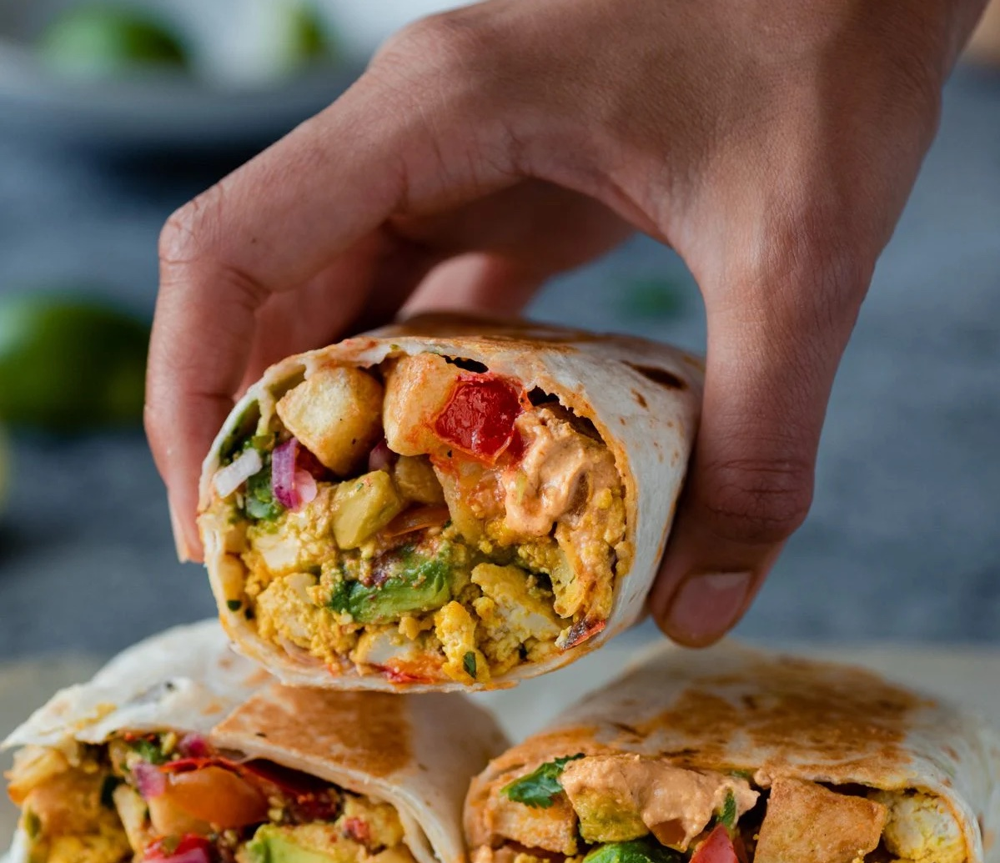

Breakfast Burrito
These loaded vegan breakfast burritos are great for a healthy, protein-packed breakfast (although it is also perfect for lunch, dinner or a hearty snack!). Are you tired of eating oatmeal for breakfast? Then try these plant-based savoury breakfast burritos!
Cauliflower Tacos
Authentic Mexican Cauliflower Tacos! Rich & tangy seasoned cauliflower, baked to perfection, stuffed into warm tortillas, & livened up with fresh mango salsa & zesty limes, making for a flavorful meal that’s ready in only 45 minutes!

BBQ 'Chicken' Nachos
Looking for a tasty dinner that’s quick, easy and vegan friendly? Loaded with smoky flavour, this BBQ 'chicken' loaded nachos recipe ticks all the boxes without breaking the bank. Trust us when we say that this is nacho average recipe!